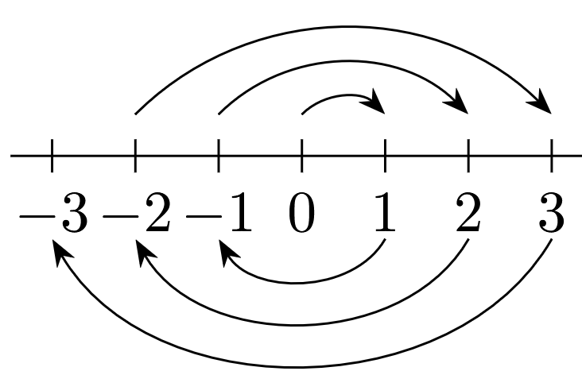

2 The Natural Numbers
In this chapter natural numbers will by synonym of the positive integers, \(\mathbb{P}\). That is, \(1, 2, 3, \ldots\), where are one of the most familiar mathematical objects.
The objective of this chapter is to develop an axiomatic theory of the natural numbers following (Mendelson 2015, chap. 2).
2.1 Peano systems
Definition 2.1 A Peano system is a triple \((\mathbb{P}, 1, S)\) where \(\mathbb{P}\) is a non empty set where \(1 \in \mathbb{P}\) and \(S\) is a singulary operation on \(\mathbb{P}\), \(S: \mathbb{P} \longrightarrow \mathbb{P}\), such that the following axioms are satisfied:
\(1\) is not the successor \(S(x)\) of any object \(x \in \mathbb{P}\). In symbols, \(\forall x(S(x) \neq 1)\) or \(1 \not \in \mathscr{R}(S)\).
Different objects in \(\mathbb{P}\) have different successors. This can be formulated as follows:
\[\forall x \forall y (x \neq y \Longrightarrow S(x) \neq (S(y)))\]
Principle of Mathematical Induction: Any subset of \(\mathbb{P}\) containing \(1\) and closed under the successor operation (See Exercise 1.37 1. and applied for a singulary operation) must be identical to \(\mathbb{P}\). This can be formulated as follows:
\[\forall B ((B \subseteq \mathbb{P} \land 1 \in B \land \forall x(x \in B \Longrightarrow S(x) \in B)) \Longrightarrow \mathbb{P} = B)\]
Note: In the triple \((\mathbb{P}, 1, S)\) the set \(\mathbb{P}\) is called the underlying set, \(S\) the successor operation, and \(1\) the distinguished element. The distinguished element \(1\) need not have anything to do with the ordinary integer \(1\).
Example 2.1
Let \(\mathbb{P}\) be the set of natural numbers. \(1\) is to denote the ordinary integer \(1\). \(S\) is the operation of adding \(1\): \(S(x) = x + 1\) for all \(x \in \mathbb{P}\). This example will be called the standard Peano system.
If \(x \in \mathbb{P}\) then \(x + 1 \neq 1\). Also if \(x \neq y\) then \(x + 1 \neq y + 1\). Furthermore, let \(B \subseteq \mathbb{P}\), \(1 \in B\) and if \(x \in B\) then \(x + 1 \in B\). Therefore \(B = \mathbb{P}\).
Let \(\mathbb{P}\) be the set of all integers greater than or equal to \(1000\). \(1\) is to denote the integer \(1000\). \(S\) is the operation of adding the ordinary integer \(1\). Thus \(S(1000) = 1001\), \(S(1001) = 1002\) and so on.
Let \(\mathbb{P}\) be the set of negative integers. \(1\) is to denote the integer \(-1\) and \(S\) is the operation of subtracting \(1\). Thus \(S(-1) = -2\), \(S(-2) = -3\) and so on.
Let \(\mathbb{P}\) be the set of even positive integers. Let \(1\) denote the integer \(2\). \(S\) is to be the operation of adding \(2\). Thus, \(S(2) = 4\), \(S(4)\) and so on.
Theorem 2.1 Every element different from \(1\) is a successor. This can be formulated as:
\[\forall x (x = 1 \lor \exists y (x = S(y)))\]
Proof. Let \(B = \{ x \in \mathbb{P}: x = 1 \lor \exists y (x = S(y)) \}\). Then we must show that \(B = \mathbb{P}\).
We have that \(1 \in B\). Now assume \(x \in B\) then \(x \in \mathbb{P}\). Because \(S: \mathbb{P} \longrightarrow \mathbb{P}\) then \(S(x) \in \mathbb{P}\) where \(S(x) \neq 1\). So if \(x = y\) it exists some \(y\) such that \(S(x) = S(y)\). Therefore \(S(x) \in B\) which means that \(B = \mathbb{P}\) by Definition 2.1 iii.
Theorem 2.2 No object is its own successor, that is, \(\forall x (S(x) \neq x)\).
Proof. Let \(B = \{ x \in \mathbb{P}: S(x) \neq x \}\). Then we must show that \(B = \mathbb{P}\).
We have that \(1 \in B\) because \(S(1) \neq 1\) by Definition 2.1 i. Also let \(x \in B\) so \(x \in \mathbb{P}\) and \(S(x) \neq x\). Furthermore \(S(x) \in \mathbb{P}\) because \(S: \mathbb{P} \longrightarrow \mathbb{P}\). By Definition 2.1 ii \(S(S(x)) \neq S(x)\) so \(S(x) \in B\). Finally by Definition 2.1 iii \(B = \mathbb{P}\).
Exercise 2.1
Prove that every object different from \(1\) is the successor for a unique object, that is,
\[\forall x (x = 1 \lor \exists !y (x = S(y)))\]
Prove \(\forall x (x = 1 \lor x = S(1) \lor \exists y (x = S(S(y))))\)
Determine whether or not the following structures \((\mathbb{P}, S, 1)\) are Peano Systems:
\(\mathbb{P}\) is a set of all integers greater than \(9\). \(1\) stands for the integer \(10\). \(S(u) = u + 1\) for any \(u \in P\), that is \(S\) is the operation of adding the ordinary integer \(1\).
\(\mathbb{P}\) is a set of all integers. \(1\) stands for the ordinary integer \(1\). \(S(u) = u + 1\) for any \(u \in P\).
\(\mathbb{P}\) is the set of all integers. \(1\) stands for the ordinary integer \(0\) and S(x) is defined us:
\[S(u) = \begin{cases} 1 & \text{if} u = 0 \\ -u & \text{if} u > 0 \\ -(u-1) & \text{if} u < 0 \end{cases}\]
Figure 2.1: \(S(u)\) for \(\mathbb{Z}\) \(\mathbb{P}\) is the set of rational numbers of the form \(\frac{1}{2^n}\) where \(n\) is a non negative integer. \(1\) stands for the integer \(1\). Also \(S(u) = \frac{1}{2}u\) for all \(u \in \mathbb{P}\).
\(\mathbb{P} = \{ 1, 2, 3, 4 \}\). \(1\) stands for the integer \(1\). Also \(S(1) = 2\), \(S(2) = 3\), \(S(3) = 4\) and \(S(4) = 1\).
\(\mathbb{P} = \{ 1, 2, 3, \ldots \} \cup \{ 1\#, 2\#, 3\#, \ldots \}\) where \(1\#\), \(2\#\), \(3\#\), \(\ldots\) are pairwase distinct new objects different from the natural numbers. Let \(1\) denote the integer 1. Let \(S(n) = n + 1\) for any positive integer \(n\) and let \(S(n\#) = (n + 1)\#\) for any positive integer \(n\). Thus, \(S(1) = 2\), \(S(2) = 3\), \(\ldots\), and \(S(1\#) = 2\#\), \(S(2\#) = 3\#\), \(\ldots\)
Solution 2.1.
By Theorem 2.2 we have that:
\[\forall x (x = 1 \lor \exists y (x = S(y)))\] Now assume that \(x = S(y)\) and \(x = S(w)\) so \(S(y) = S(w)\). By Definition 2.1 ii \(y = w\). Therefore:
\[\forall x (x = 1 \lor \exists !y (x = S(y)))\]
We have that \(1 \in B\). Now assume \(y \in B\) then \(y \in \mathbb{P}\). Because \(S: \mathbb{P} \longrightarrow \mathbb{P}\) then \(S(y) \in \mathbb{P}\) where \(S(y) \neq 1\). Furthermore by Definition 2.1 ii \(S(S(y)) \neq S(1)\).
If \(y = 1\) then \(S(1) \neq 1\) and by Theorem 2.1 \(x = S(1)\).
Also if \(S(S(y))\) and \(y \neq 1\) by Theorem 2.1 \(\exists y (x = S(S(y)))\). Therefore:
\[\forall x (x = 1 \lor x = S(1) \lor \exists y (x = S(S(y))))\]
In each \((\mathbb{P}, S, 1)\) we have the following results
Because \(\mathbb{P} = \{ u : u > 9 \land u \text{ is an integer} \}\).
First \(S(u) = u + 1\) where \(u \in \mathbb{P}\) then \(S(u) \neq 10\). Because if \(u + 1 = 10\) then \(u = 9\) but \(9 \not \in \mathbb{P}\).
Also let \(S(u) = S(v)\) so \(u + 1 = v + 1\) which means that \(u = v\).
Finally let \(10 \in B \subseteq \mathbb{P}\) and if \(u \in B\) then \(u + 1 \in B\).
Let \(v \in \mathbb{P}\) so we need to prove that \(v \in B\). Define \(A = \{ x \in \mathbb{P} \mid 10 \leq x \leq v \}\) and let \(B \cap A\)
First, we have that \(B \cap A \subseteq A\) so by Theorem D.6 b \(B \cap A\) must be finite. Furthermore \(B \cap A \neq \emptyset\) because \(10 \in B\) and \(10 \in A\).
Second, because \(B \cap A\) is finite and \(B \cap A \neq \emptyset\) it must have a greatest element \(k\). Pending reference Appendix D
If \(k = v\) then \(v \in B\)
If \(k < v\) and because \(k \in B \cap A\) then \(k \in B\). Because of the properties of \(B\) then \(k + 1 \in B\). Also this means that \(10 \leq k + 1 \leq v\) so \(k + 1 \in A\) but this will mean that \(k + 1 \in B \cap A\). However \(k + 1 > k\) so \(k\) will not be the greatest element. Because we arrive to a contradiction we discard that \(k < v\).
The proof is similar to Solution 2.1 3 a but with \(1\) instead of \(10\) and \(\mathbb{P} = \{ u : u > 0 \land x \text{ is an integer} \}\)
Let \(\mathbb{P} = \mathbb{Z}\)
Because \(S(u) = 1, S(u) = -u < 0\) or \(S(u) = -(u - 1) > 1\) then \(S(u) \neq 0\)
Also if \(S(u) = S(v)\) then \(1 = 1\) so \(u = v = 0\), \(-u = -v\) so \(u = v\) or \(-(u - 1) = -(v - 1)\) so \(u = v\).
Finally let \(0 \in B \subseteq \mathbb{P}\) and if \(u \in B\) then \(S(u) \in B\).
Let \(v \in \mathbb{P}\) so we need to prove that \(v \in B\). Lets define the set \(A\) in the following way:
\[A = \begin{cases} \{x \in \mathbb{P} \mid -(v - 1) \leq x \leq v \} & \text{ if } v > 0 \\ \{x \in \mathbb{P} \mid v \leq x \leq -v \} & \text{ if } v \leq 0 \end{cases}\]
First, we have that \(B \cap A \subseteq A\) so by Theorem D.6 b \(B \cap A\) must be finite. Furthermore \(B \cap A \neq \emptyset\) because \(0 \in B\) and \(0 \in A\).
Second, because \(B \cap A\) is finite and \(B \cap A \neq \emptyset\) it must have a greatest element \(k\) and a least element \(l\) Pending specify that you can extend reference Appendix D.
If \(k = v > 0\) or \(l = v \leq 0\) then \(v \in B\)
If \(k < v\) and \(v > 0\) because \(k \in B \cap A\) then \(k \in B\). Also because of the properties of \(B\) then \(S(k) \in B\).
If \(k = 0\) then \(S(k) = 1 \in B\) and \(-(v - 1) \leq 1 \leq v\) so \(1 \in A\) but this will mean that \(1 \in B \cap A\). However \(1 > 0\) so \(0\) will not be the greatest element. Because we arrive to a contradiction we discard that \(k < v\) when \(k = 0\).
If \(k > 0\) then \(S(k) = -k \in B\) and \(S(-k) = -(-k - 1) = k + 1 \in B\). Therefore \(-(v - 1) \leq k + 1 \leq v\) so \(k+1 \in A\) but this will mean that \(k+1 \in B \cap A\). However \(k+1 > k\) so \(k\) will not be the greatest element. Because we arrive to a contradiction we discard that \(k < v\) when \(k > 0\).
If \(k < 0\) then we discard this case because \(0 \in B \cap A\) so if \(k < 0\) it can not be the greatest element.
If \(v < l\) and \(v \leq 0\) because \(l \in B \cap A\) then \(l \in B\). Also because of the properties of \(B\) then \(S(l) \in B\).
If \(l = 0\) then \(S(l) = 1 \in B\) and \(S(1) = -1\). Therefore \(v \leq -1 \leq -v\) so \(-1 \in A\) but this will mean that \(-1 \in B \cap A\). However \(-1 < 0\) so \(0\) will not be the least element. Because we arrive to a contradiction we discard that \(v < l\) when \(l = 0\).
If \(l > 0\) then we discard this case because \(0 \in B \cap A\) so if \(l > 0\) it can not be the least element.
If \(l < 0\) then \(S(l) = -(l - 1) = -l + 1 \in B\) and \(S(-l + 1) = l - 1 \in B\). Therefore \(v \leq l - 1 \leq -v\) so \(l - 1 \in A\) but this will mean that \(l - 1 \in B \cap A\). However \(l - 1 < l\) so \(l\) will not be the least element. Because we arrive to a contradiction we discard that \(v < l\) when \(l < 0\).
Let \(\mathbb{P} = \{ u \mid u = \frac{1}{2^n} \land n \in \mathbb{Z}_{\geq 0} \}\)
First \(S(u) = \frac{1}{2}u\) where \(u = \frac{1}{2^n}\) then \(S(u) \neq 1\). Because if \(\frac{1}{2}u = 1\) then \(u = 2\) but \(u = \frac{1}{2^n}\). So \(u = 2\) will imply \(\log_2 1 = n + 1\) but this is not true because \(n \neq -1\).
Also let \(S(u) = S(v)\) so \(\frac{1}{2}u = \frac{1}{2}v\) which means that \(u = v\).
Finally let \(1 \in B \subseteq \mathbb{P}\) and if \(u \in B\) then \(S(u) \in B\).
Let \(v \in \mathbb{P}\) so we need to prove that \(v \in B\). Define \(A = \{ x \in \mathbb{P} \mid v \leq x \leq 1 \}\) and let \(B \cap A\)
First, we have that \(B \cap A \subseteq A\) so by Theorem D.6 b \(B \cap A\) must be finite. Furthermore \(B \cap A \neq \emptyset\) because \(1 \in B\) and \(1 \in A\).
Second, because \(B \cap A\) is finite and \(B \cap A \neq \emptyset\) it must have a least element \(l\). Pending specify that you can extend reference Appendix D
If \(l = v\) then \(v \in B\)
If \(v < l\) and because \(l \in B \cap A\) then \(l \in B\). Because of the properties of \(B\) then \(S(l) = \frac{1}{2}l \in B\). Also this means that \(v \leq \frac{1}{2}l \leq 1\) so \(\frac{1}{2}l \in A\) but this will mean that \(\frac{1}{2}l \in B \cap A\). However \(\frac{1}{2}l < l\) so \(l\) will not be the least element. Because we arrive to a contradiction we discard that \(v < l\).
Because \(\mathbb{P} = \{ 1, 2, 3, 4 \}\) and \(S(1) = 2\), \(S(2) = 3\), \(S(3) = 4\), \(S(4) = 1\) we have that this structure is not a peano system because:
- \(S(4) = 1\)
Because \(\mathbb{P} = \{ 1, 2, 3, \ldots \} \cup \{ 1\#, 2\#, 3\#, \ldots \}\), \(S(n) = n + 1\) and \(S(n\#) = (n + 1)\#\) we have that this structure is not a peano system because:
Assume \(1 \in B\) where \(B = \{ 1, 2, 3, \ldots \} \subseteq \mathbb{P}\) and if \(u \in B\) then \(S(u) \in B\).
- By Exercise 2.1 3 b \(B = \{ 1, 2, 3, \ldots \}\) where \(B \neq \mathbb{P}\).
2.2 Diagramatic interpretation of peano system axioms
Following (Enderton 2009, 70) we can specify different interpretations of the axioms presented in Definition 2.1.
In the case of the first axiom Definition 2.1 i if \(\mathbb{P} = \{ 1, 2, 3 \}\), \(S(1) = 2\), \(S(2) = 3\) and \(S(3) = 1\) a representation of the violation of this axiom is represented in Figure 2.2:
The axiom pointed out in Definition 2.1 i avoid that you can return to the origin \(1\) using the successor function \(S\).
In the case of the second axiom Definition 2.1 ii if \(\mathbb{P} = \{ 1, 2, 3 \}\), \(S(1) = 2\), \(S(2) = 3\) and \(S(3) = 2\) a representation of the violation of this axiom is represented in Figure 2.3:
The axiom pointed out in Definition 2.1 ii avoid that you can have loops using the successor function \(S\).
In the case of the third axiom Definition 2.1 iii if \(\mathbb{P} = \{ 1, 2, 3, \ldots \} \cup \{ \omega \}\) where \(\{ 1, 2, 3, \ldots \} \cap \{ \omega \} = \emptyset\) , \(S(1) = 2\), \(S(2) = 3\), \(\ldots\), \(\omega = S(\omega)\) a representation of the violation of this axiom is represented in Figure 2.4:
The axiom pointed out in Definition 2.1 iii avoid that you can not reach an element in \(\mathbb{P}\) using the successor function \(S\) and beginning at the origin \(1\).
2.3 The iteration theorem
Any arithmetical notions such as \(+\) and \(\times\) are not mentioned in Definition 2.1. These notions will be defined by induction. The idea of the definition by induction is different from that of proof by mathematical induction pointed out in Definition 2.1 iii.
When we define a function \(f\) by induction, we first specify \(f(1)\) and then indicate a rule for obtaining \(f(S(x))\) from the previous value \(f(x)\). This determines a unique function \(f\) defined on \(\mathbb{P}\).
Theorem 2.3 (Iteration theorem) Consider any peano system \((\mathbb{P}, S, 1)\). Let \(W\) be an arbitrary set, let \(c\) be a fixed element of \(W\), and let \(g\) be a singulary operation on \(W\), that is \(g: W \longrightarrow W\). Then, there is a unique function \(F: \mathbb{P} \longrightarrow W\) such that:
- \(F(1) = c\)
- \(F(S(x)) = g(F(x))\) for all \(x \in \mathbb{P}\)
Proof.
Existence of a suitable function \(F\)
Take any \(n \in \mathbb{P}\). A function \(f: A \longrightarrow W\) is said to be \(n\)-admissible if and only if:
\(A \subseteq \mathbb{P}\)
\(1 \in A\)
\(n \in A\)
\(\forall u (S(u) \in A \Longrightarrow u \in A)\)
\(f(1) = c\)
\(\forall u (S(u) \in A \Longrightarrow f(S(u)) = g(f(u)))\)
If \(f\) is \(S(n)\)-admissible, then \(f\) is \(n\)-admissible
If conditions i, ii and iv-vi are fulfill for \(S(n)\) they are also fulfill for \(n\). The only condition that we need to check is iii, that is \(n \in A\). Because \(f\) is \(S(n)\)-admissible by iii \(S(n) \in A\). Therefore by iv \(n \in A\).
For any \(n \in \mathbb{P}\) there exists at least one \(n\)-admissible function.
We shall prove this by mathematical induction using Definition 2.1 i. Let \(B\) be the set of all members \(n \in P\) for which there exists at least one \(n\)-admissible function.
We must show that \(B = \mathbb{P}\). First, lets build a \(1\)-admissible function. Let \(A = \{ 1 \}\) then \(\{ 1 \} \subseteq \mathbb{P}\), \(1 \in \{ 1 \}\), \(S(1) \neq \{ 1 \}\) and \(f(1) = c\). Therefore \(f: \{ 1 \} \longrightarrow W\) is \(1\)-admissible.
Second, assume \(n \in B\). Then by assumption there is some \(n\)-admissible function \(f\) such that \(f: A \longrightarrow W\).
Third, define a function \(f^*\) such that for any \(x \in A\) \(f^*(x) = f(x)\) and if \(S(n) \not \in A\) let \(f^*(S(n)) = g(f(n))\). Note that if \(S(n) \in A\) then by vi \(f(S(u)) = g(f(u))\). Therefore, \(f^*: A^* \longrightarrow W\) such that \(A^* = A \cup \{ S(n) \}\) where \(A \subseteq A^*\). So \(A^* \subseteq \mathbb{P}\), \(1 \in A^*\), \(n \in A^*\), if \(S(n) \not \in A\) then \(S(n) \in A^*\) then \(n \in A^*\), \(f^*(1) = f(1) = c\) and if \(S(n) \not \in A\) then \(S(n) \in A^*\) implies that \(f^*(S(n)) = g(f(n))\). This means that \(f^*\) is \(S(n)\)-admissible.
Thus, \(S(n) \in B\). We have shown that if \(n \in B\) then \(S(n) \in B\). By Definition 2.1 iii \(B = \mathbb{P}\).
If \(f\) is \(n\)-admissible and \(h\) is \(n\)-admissible then \(f(n) = h(n)\).
We shall prove this by mathematical induction. Let \(Y = \{ n \in \mathbb{P} \mid (\forall f) (\forall g) (((f \text{ is } n\text{-admissible} \land (g \text{ is } n\text{-admissible} )) \Longrightarrow f(n) = g(n)) \}\). We must show that \(Y = \mathbb{P}\) using Definition 2.1 iii.
First, \(1 \in Y\) because \(1 \in \mathbb{P}\) and if \(f\) and \(g\) are \(1\)-admissible then \(f(1) = c = g(1)\).
Second, assume \(n \in Y\).
Third, let \(f\) and \(h\) be \(S(n)\)-admissible. Then by a. \(f\) and \(h\) are \(n\)-admissible. Because \(n \in Y\) then \(f(n) = h(n)\). By vi. \(f(S(n)) = g(f(n))\) but \(f(n) = h(n)\) so \(f(S(n)) = g(h(n))\). Again by vi. \(f(S(n)) = h(S(n))\).Therefore \(S(n) \in Y\) so \(Y = \mathbb{P}\)
For any \(n \in \mathbb{P}\) by b. it exists an \(n\)-admissible function \(f\).
Let us define \(F(n) = f(n)\). By c. the value of \(F(n)\) does not depend upon the particular choice of the \(n\)-admissible function \(f\).
Because we choose any \(n \in \mathbb{P}\) then \(\mathscr{D}(F) = \mathbb{P}\). Also, \(F(1) = f(1)\) for some \(1\)-admissible function \(f\). But, \(f(1) = c\). Hence we have that \(F(1) = c\).
In addition, \(F(S(n)) = f(S(n))\) for some \(S(n)\)-admissible function \(f\). By a. \(f\) is also \(n\)-admissible where \(F(n) = f(n)\). Also since \(f\) is \(S(n)\)-admissible, \(f(S(n)) = g(f(n))\) we have that \(F(S(n)) = g(F(n))\).
Therefore conditions a. and b. in Theorem 2.3 are satisfied by \(F\).
We must still show that the range of \(F\) is included in \(W\). Because for any \(n \in \mathbb{P}\), \(F(n) = f(n)\) for some \(n\)-admissible function \(f\). Since \(\mathscr{R}(f) \subseteq W\), it follows that \(F(n) \in W\) for any \(n \in \mathbb{P}\).
Uniqueness of \(F\)
Assume \(F_1\) and \(F_2\) are functions from \(\mathbb{P}\) into \(W\) satisfying conditions a. and b. in Theorem 2.3.
Let \(K = \{ n \in \mathbb{P} \mid \land F_1(n) = F_2(n) \}\).
First, \(1 \in K\) because \(F_1(1) = c = F_2(1)\).
Second, assume \(n \in K\) so \(F_1(n) = F_2(n)\).
Third, let \(F_1(S(n))\) then \(F_1(S(n)) = g(F_1(n))\). Therefore \(g(F_1(n)) = g(F_2(n))\) which means that \(g(F_2(n)) = F_2(S(n))\). So \(F_1(S(n)) = F_2(S(n))\).
By Definition 2.1 iii \(K = \mathbb{P}\) so for all \(n \in \mathbb{P}\) we have that \(F_1(S(n)) = F_2(S(n))\). Also \(\mathscr{D}(F_1) = \mathscr{D}(F_2)\) so by Exercise 1.32 3 \(F_1 = F_2\).